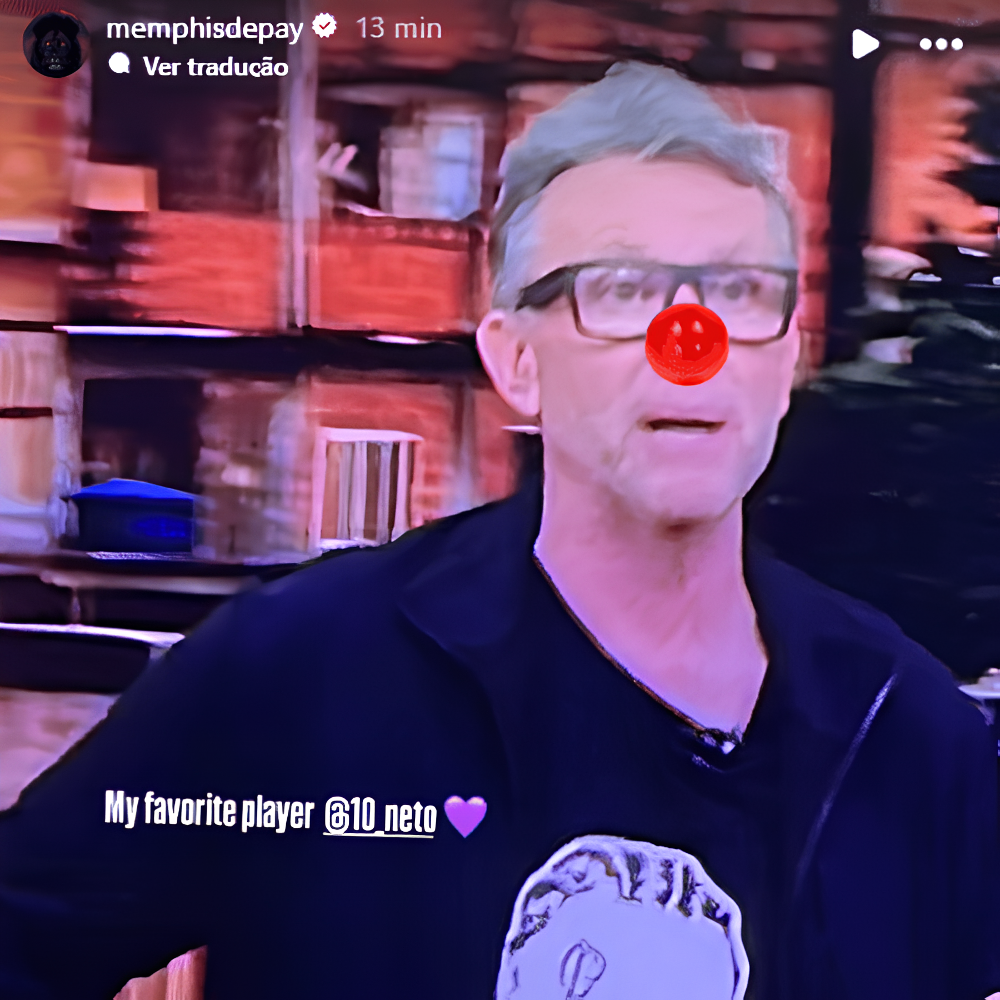
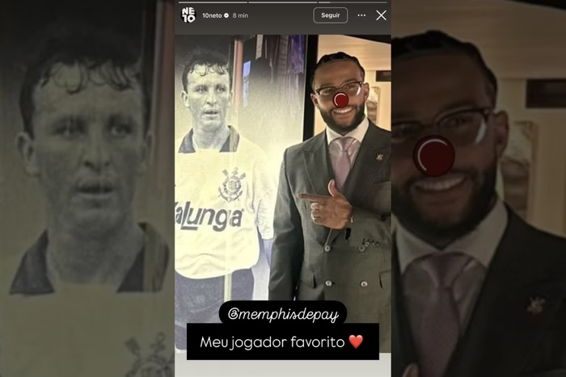

O jogador Memphis Depay se envolveu em uma "treta" com o ex-jogador e jornalista Craque Neto. O Craque Neto é bastante conhecido por criticar muito os jogadores em seu programa. Porém, quando ele criticou uma atitude do Memphis, o jogador não gostou. Em resposta, Memphis postou um story zombando do jornalista e lançou uma música na qual dizia algumas coisas para o Craque.
DIA-DIA DO TIMÃO
FALA DO MEMPHIS:

FALA DO CRAQUE NETO:
É óbvio que o Craque Neto não iria deixar barato depois de tudo isso. Ele, que já é conhecido por não poupar nenhum comentário, respondeu ao jogador no dia 23 de junho de 2025, em seu programa Donos da Bola, na rede de televisão Bandeirantes, sem economizar palavras. Além disso, postou um story parecido com o do jogador. Veja:

Corinthians no Brasileirão 2025:
| Pos | Time | J | V | E | D | GM | GC | SG | Pts |
|---|---|---|---|---|---|---|---|---|---|
| 11 | Corinthians | 16 | 5 | 5 | 6 | 15 | 19 | -4 | 20 |